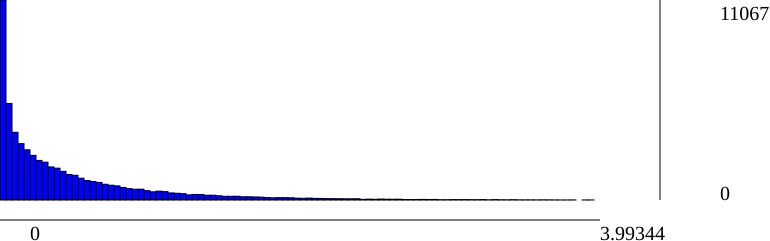

SFM report.
Dataset info:
#views: 27
#poses: 25
#intrinsics: 1
#tracks: 12342
#residuals: 29137
Track length statistics:
| IdView | Basename | #Observations | Residuals min | Residuals median | Residuals mean | Residuals max |
| 0 | 001 | 1656 | 2.11748e-05 | 0.48725 | 0.670159 | 3.69174 |
| 1 | 002 | 1630 | 0.000273235 | 0.62605 | 0.80312 | 3.73465 |
| 2 | 003 | 1327 | 2.11488e-05 | 0.418186 | 0.612374 | 3.79697 |
| 3 | 004 | 686 | 0.000247425 | 0.361176 | 0.587641 | 3.36378 |
| 4 | 005 | 222 | 7.94591e-05 | 0.420393 | 0.602991 | 2.87002 |
| 5 | 006 | 847 | 3.48082e-05 | 0.117117 | 0.244173 | 2.43912 |
| 6 | 007 | 1508 | 1.64693e-05 | 0.0681599 | 0.176135 | 2.81351 |
| 7 | 008 | 1390 | 6.75181e-06 | 0.0681002 | 0.176952 | 2.69552 |
| 8 | 009 | 384 | 0.000230128 | 0.0860439 | 0.196876 | 1.63707 |
| 9 | 010 | 444 | 7.76046e-05 | 0.196604 | 0.385095 | 3.61106 |
| 10 | 011 | 1610 | 1.29631e-05 | 0.128214 | 0.290818 | 3.60914 |
| 11 | 012 | 3049 | 3.31537e-06 | 0.228754 | 0.379746 | 3.52368 |
| 12 | 013 | 1962 | 0.000123852 | 0.192082 | 0.401538 | 3.94696 |
| 13 | 014 | 1696 | 5.30554e-05 | 0.145576 | 0.305504 | 3.99344 |
| 14 | 015 | 1701 | 1.43228e-05 | 0.238768 | 0.393818 | 3.79256 |
| 15 | 016 | 1797 | 3.16503e-05 | 0.154881 | 0.328266 | 3.82685 |
| 16 | 017 | 324 | 2.93987e-06 | 0.317436 | 0.528716 | 3.31386 |
| 17 | 018 | 322 | 0.000689496 | 0.328774 | 0.5329 | 2.86239 |
| 18 | 019 | 583 | 0.000454276 | 0.33413 | 0.525098 | 3.62384 |
| 19 | 020 | 1122 | 0.000471651 | 0.382709 | 0.549898 | 3.43983 |
| 20 | 021 | 1949 | 3.62864e-05 | 0.441574 | 0.612431 | 3.68644 |
| 21 | 022 | 921 | 9.13626e-05 | 0.402058 | 0.588218 | 3.41466 |
| 22 | 023 | 160 | 0.000171817 | 0.365502 | 0.570261 | 2.93366 |
| 23 | 024 |
| 24 | 025 |
| 25 | 026 | 56 | 0.00676089 | 0.340124 | 0.647839 | 3.4328 |
| 26 | 027 | 1791 | 8.41893e-06 | 0.353221 | 0.597728 | 3.94749 |
SfM Scene RMSE: 0.710825
Residuals histogram
